7210B55 R.R. BOOT FLOOR
- Path
- Procedures > 72 PANELS AND FRAME > 7210 REMOVING REFITTING > 7210B structure elements-central and rear part > 7210B55 R.R. BOOT FLOOR
- Kind
- repair procedure (removal / refitting; the operation number is the code)
- Applies to
- all engines; all production periods
- Interactive page
- https://sloeber94.github.io/elrnDB-a156/en/#/3239038
Applies to: all engines; all production periods
 Removing
Removing
 Refitting
RefittingCheck if any of the connected parts are deformed by checking body alignment dimensions. Use appropriate measurement tools (reference rigs, templates or gauges).
Straighten the body if necessary.
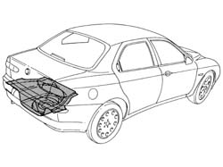
Applies to: all engines; all production periods
1. Use an air saw to follow the dotted cutting lines shown in the figure.
2. Cross-sections of key areas as a guide to allow the operator to adjust cutting position and depth in order to avoid damage to the underlying panels.
3. Remove the central part of the floor pan.
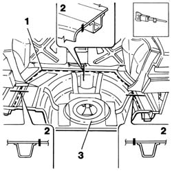
Applies to: all engines; all production periods
Use a scribe to trace out the area of floor pan to be cut using a circular saw.
1. Use a circular saw to follow the cutting lines shown in the figure.
2. Cross-section of cut.
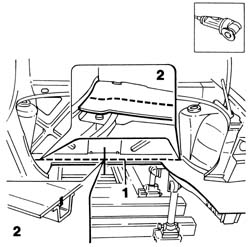
Applies to: all engines; all production periods
1. Use a vibrating cutter with appropriate blade to remove P.V.C. treatment.
Use a rotary brush to remove paint to gain access to the spot welds.
2. Use a chamfering machine to remove the weld spots shown in the figure.
3. Use a drill to remove the weld spots shown in the figure.
4. Use a chisel and mallet to remove weld spots and remove the excess sheet steel.
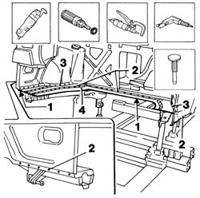
Applies to: all engines; all production periods
1. Straighten the car edges using a mallet and profiled stake.
Use a grinding wheel to remove the weld spot residues.
Apply the electric weld paint finish.
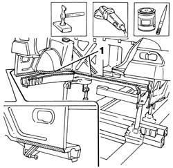
Applies to: all engines; all production periods
1. Cut the part at the bench with reference to the dimensions in the figure. Take care to leave a sufficiently wide section of steel to attach the new part.
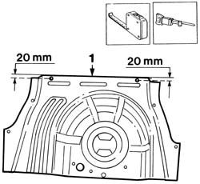
Applies to: all engines; all production periods
Refitting
RemovingPosition the part on the car and secure using self-locking clips or Parker screws.
Check the panel laid on correctly in the joint area.
1. Use the holes shown in the figure as a reference and respect the dimensions shown.
Use a scribe to mark the cutting line.
2. Use a circular saw to cut along cutting lines marked previously.
3. Remove the part from the car.
Remove the excess cut edges and treat the underlying edges on the car.
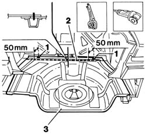
Applies to: all engines; all production periods
1. Working at the bench, make equidistant holes as shown in the figure.
Remove the corrosion-proofing from around the inner and outer edge of the part throughout the area shown.
Apply the electric weld paint finish to edges in contact with the car.
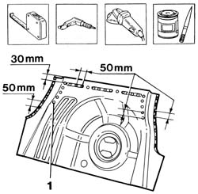
Applies to: all engines; all production periods
1. Position the floor pan on the car and secure using self-locking grippers.
2. Use a spot welder to weld the areas shown in the figure.
3. Use a MIG welder to seam weld along the line shown in the figure.
4. Use a MIG welder to fill the holes on the part made previously.
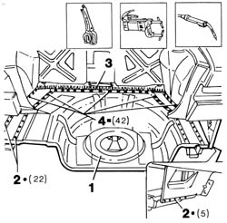
Applies to: all engines; all production periods
Correct any deformations in the sheet steell using a profiled stake and mallet.
1. Use a grinding wheel to level weld residues and remove.
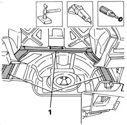
Applies to: all engines; all production periods
Apply rust-proofing to newly welded areas.
1. Seal the joint lines between the part and the car using sealant.
Restore the PVC treatment.
2. Apply sound-deadening panels.
Paint the load compartment floor (using the specified cycle).
Apply wax.
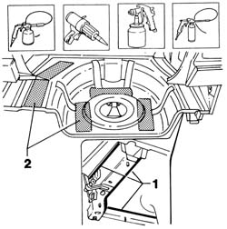